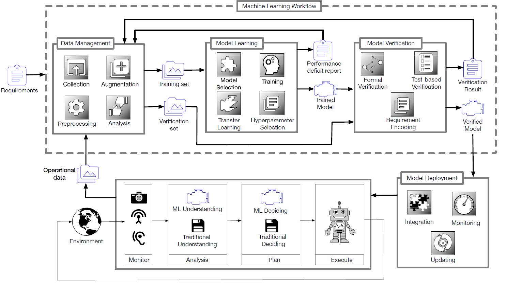
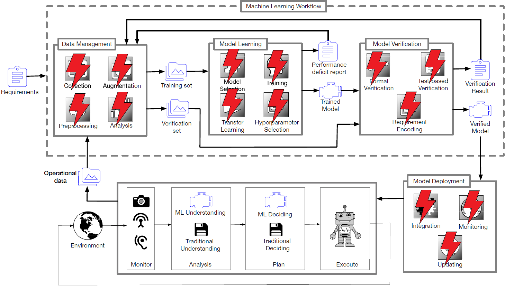
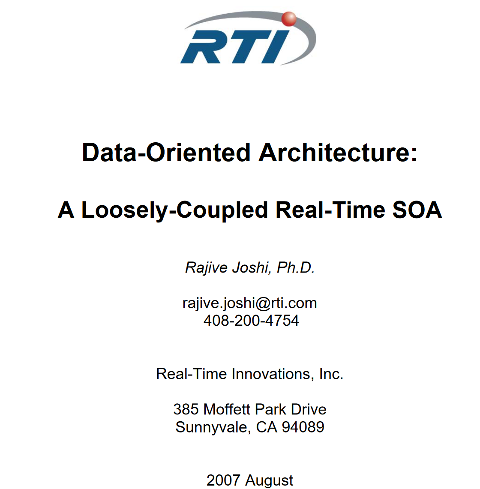
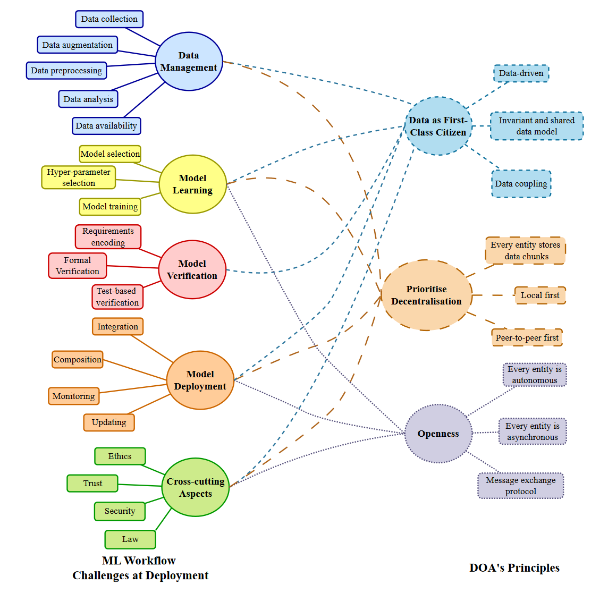
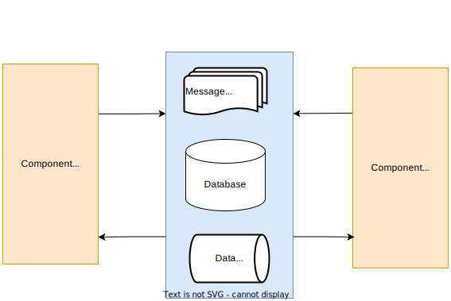
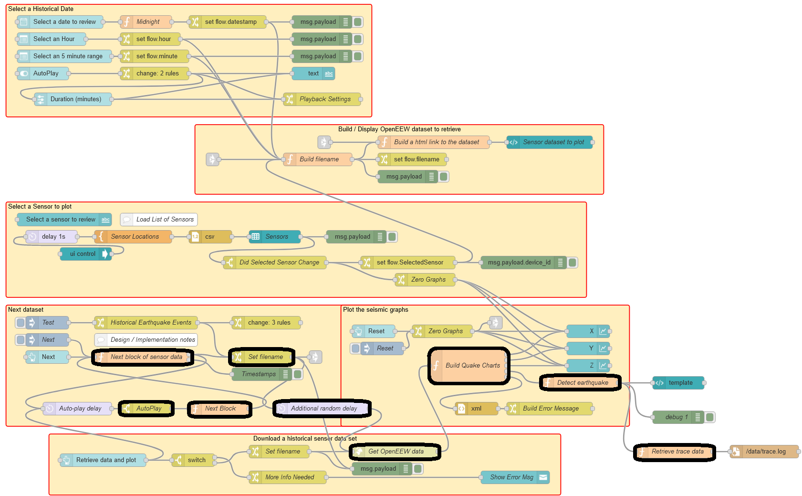
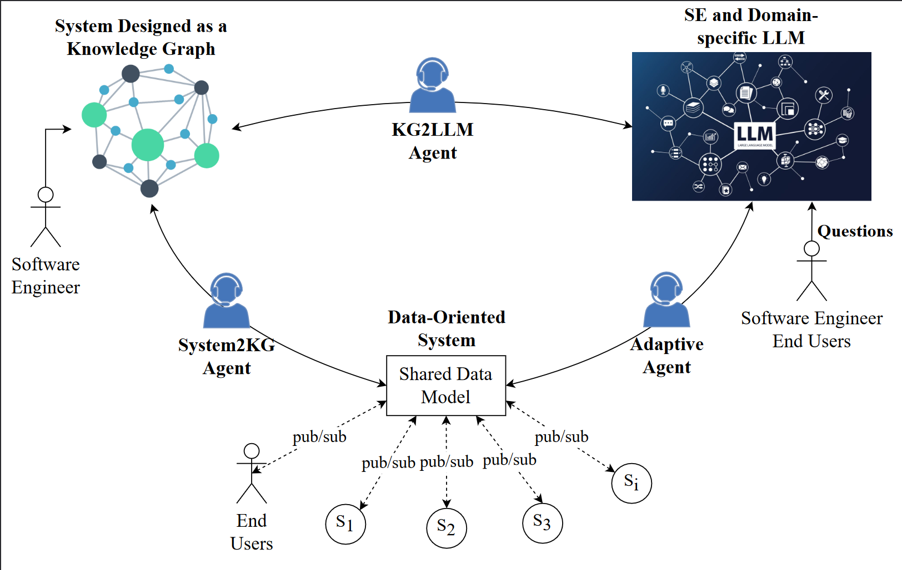

Design of ML software systems
orHow industry experience can lead someone to academia
Andrei Paleyes
Accelerate Science AI Cafe
St Edmund's College, November 2024
- Training dataset incomplete
- Inference and training data records are different
- Special data processing pipeline is needed
- Required data is not available and needs to be saved
- Data is sensitive and requires special permissions
- Training dataset incomplete
- Inference and training data records are different
- Special data processing pipeline is needed
- Required data is not available and needs to be saved
- Data is sensitive and requires special permissions
Scaling Big Data Mining Infrastructure: The Twitter Experience J Lin, D Ryaboy; ACM SIGKDD Explorations Newsletter, 2013
“Effective big data mining at scale doesn't begin or end with what academics would consider data mining”
“Data scientists expend a large amount of effort to understand the data available to them, before they even begin any meaningful analysis”
“Exploratory data analysis always reveals data quality issues”
The Data Dichotomy: Rethinking the Way We Treat Data and Services B Stopford, Confluent, 2016
“A dichotomy: Data systems are about exposing data. Services are about hiding it.”
“The underlying issue is that data and services don't sing too sweetly together.”
“We need to consider [data] a first class citizen of the architectures we build.”
Is it just us?
Is it just us?
"Challenges in Deploying Machine Learning: A Survey of Case Studies", ACM Computing Surveys 2022
Data-oriented architectures
"Data-Oriented Architecture: A Loosely-Coupled Real-Time SOA", Joshi, 2007
Data-oriented architectures
"Real-world Machine Learning Systems: A survey from a Data-Oriented Architecture Perspective", Under review
Data coupling
"DOA-Based Composition", https://github.com/cabrerac/doa-composition
Dataflow architecture and flow-based programming
"A preliminary architecture for a basic data-flow processor", Dennis and Misunas, 1974
"Data-flow computer architecture", Dennis, 1987
"Flow-Based Programming: A new approach to application development", Morrison, 2010
Dataflow architecture and flow-based programming

"Towards better data discovery and collection with flow-based programming", DCAI @ NeurIPS 2021
"An empirical evaluation of flow based programming in the machine learning deployment context", CAIN 2022
Causality

https://xkcd.com/552/
Causality on dataflow graphs!

"Dataflow graphs as complete causal graphs", CAIN 2023
"Causal fault localisation in dataflow systems", EuroMLSys @ EuroSys 2023
"Can causality accelerate experimentation in software systems?", CAIN 2024
Self-sustaining Software Systems (S4)
"Self-sustaining Software Systems (S4): Towards Improved Interpretability and Adaptation", SATrends 2024
Thanks!
| Neil Lawrence | Christian Cabrera | Jessica Montgomery | Eric Meissner |
| Pierre Thodoroff | Diana Robinson | Markus Kaiser |
 Siyuan Guo
Siyuan Guo
|
Reach out!
ap2169@cl.cam.ac.uk | https://paleyes.info
https://mlatcl.github.io